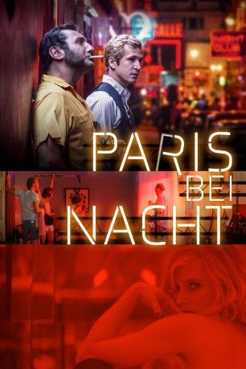

#12092 Paris bei Nacht
Alternativ: Paris Pigalle (Englischer Titel)
 
 IMDB-Wertung: 5.2 / 10
IMDB-Wertung: 5.2 / 10  Metascore: 0
Metascore: 0 
Paris, 1982. Franck und Serge, Betreiber der Pariser Peepshow Le Mirodrome, befinden sich in einer schwierigen Lage, denn das Geschäft läuft nicht mehr so gut. Um ihr Etablissement zu retten, beginnen sie damit, mit ihren Tänzerinnen kleine Sex-Filme zu drehen. Das erregt nicht nur die Käufer, sondern auch die Konkurrenz: Eines Nachts stürmt eine Bande vermummter Männer das Mirodrome und macht alles zu Kleinholz. Finanziell vollkommen ruiniert, sind Franck und Serge nun dazu gezwungen, mit ihren Konkurrenten Geschäfte zu machen. Was den anderen Rotlicht-Gangstern aber nicht bewusst ist: Die beiden sind in Wahrheit Undercover-Cops, deren Auftrag es ist, die Hintermänner eines illegalen Pariser Pornorings auffliegen zu lassen.
Jahr: 2018
Dauer: 118 Minuten
FSK: 16
Land: Frankreich Studio: Alamode FilmTonspuren:
Untertitel: Deutsch,
Auflösung: 1080p (1920x808) Größe: 6154 MB
Genre: Komödie
Regisseur: Cédric Anger
Drehbuch: Cédric Anger
Soundtrack: Grégoire Hetzel
Darsteller:
 Guillaume Canet als Franck / Martin
Guillaume Canet als Franck / Martin Gilles Lellouche als Serge / Georges
Gilles Lellouche als Serge / Georges Michel Fau als Maurice Vogel
Michel Fau als Maurice Vogel Xavier Beauvois als Henri Pachard
Xavier Beauvois als Henri Pachard- Elisa Bachir Bey als Mélissa
 Xavier Alcan als John Baccardi
Xavier Alcan als John Baccardi- Christian Gregori als Bazin
- Jesuthasan Antonythasan als Hakim
 Joséphine de La Baume als Linda
Joséphine de La Baume als Linda- Quentin Dolmaire als Vincent
- Clémentine Baert als Nathalie
- Justin Blanckaert als Assistant Pachard
 Louis-Do de Lencquesaing als Le propriétaire du manoir
Louis-Do de Lencquesaing als Le propriétaire du manoir- Lucie Debay als Alex (scenes deleted)
 Catherine Deneuve als Herself (archive footage) (uncredited)
Catherine Deneuve als Herself (archive footage) (uncredited)- Jack Lang als Himself (archive footage) (uncredited)
- Camille Razat als Virginie, dite Caprice
- Inge van Bruystegem als Sheila
- Valeria Nicov als Chloé
- Jean-Louis Barcelona als Bite de singe
- Matthieu Dessertine als Marc
- Jade Laroche als Lola Herrera
- Marc Brunet als Georges Chalvat
- Christian Mazucchini als Bruno
- Guillaume Verdier als Lionel
- Kimberly Zakine als Madison
- Mégane Lemiel als Paméla
- Jeannick Gravelines als André d'Apice
- Charlotte Gérald als Pauline
- Aaron Serfaty als Jérémy
- Alban Ceray als Michel
- Marilyn Jess als Nadine
- Frédéric Merlo als Robert, le chef opérateur
- Aurélia Alcaïs als La femme du propriétaire du manoir
- Romain Lesaffre als Copain Chloé
- Milo Da Mota-Redon als Fils des propriétaires
- Nina Von Rönne als La femme de Bite de singe
- Alexandra Dewulf als Femme film Pachard
- Sébastien Labadie als Entraîneur de tennis
- Armel Cazedepats als Homme film Pachard
- Jean Abeillé als Le père de Vogel
- Joanne Almera als La bandeuse
- Géraldine Lavie als Membre équipe tournage Pachard
- Ange Ruzé als Membre équipe tournage Pachard (électro)
- Nicolas Ronchi als Membre équipe tournage Pachard (ingé son)
- Lucien Jacquelin als Membre équipe tournage Pachard
- Jonathan Boudina als Simon (uncredited)
- Michael Mcmurran als Client sex-shop (uncredited)
Datei: X:\2018(N-Z)\Paris bei Nacht (2018, FSK16, 1920x808).mkv seit 01.12.2019
Festplatte: HD 2018(G-Z)-2019(A-Z)
 Es gibt insgesamt 172 Filme in der Gruppe '2018(N-Z)'
Es gibt insgesamt 172 Filme in der Gruppe '2018(N-Z)'